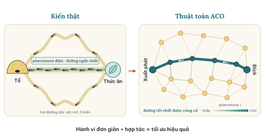
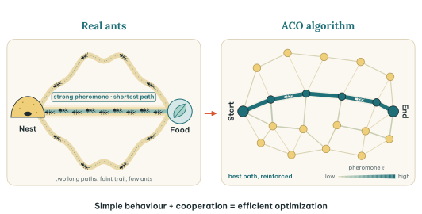
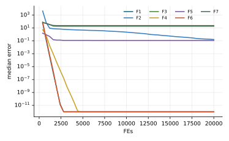

Chương 4 · Trí tuệ bầy đànChapter 4 · Swarm Intelligence
Tối ưu đàn kiếnAnt Colony OptimizationAnt Colony Optimization — ACOACO — shortest paths drawn in pheromone
Châu Văn Vân · PTITHCM
Mục tiêu bài họcLearning objectives
Sau chương này, bạn có thểAfter this chapter you will be able to
- Giải thích stigmergy và thí nghiệm cầu đôi.Explain stigmergy and the double-bridge experiment.
- Viết quy tắc chuyển trạng thái xác suất và quy tắc cập nhật pheromone.Write the probabilistic transition rule and the pheromone update rule.
- Phân tích tác động của α, β, ρ, m tới hội tụ và trì trệ.Analyse how α, β, ρ, m affect convergence and stagnation.
- Phân biệt Ant System, Ant Colony System và MAX–MIN Ant System.Distinguish Ant System, Ant Colony System and MAX–MIN Ant System.
Tổng quanOverview
Kiến tìm đường ngắn mà không cần bản đồAnts find short paths without a map
- Do Marco Dorigo khởi xướng năm 1992; hệ kiến Ant System được công bố đầy đủ năm 1996 cùng Maniezzo và Colorni.Started by Marco Dorigo in 1992; the Ant System was published in full in 1996 with Maniezzo and Colorni.
- Kiến để lại pheromone trên đường đi; kiến sau có xu hướng đi theo vệt đậm hơn.Ants lay pheromone as they walk; later ants tend to follow stronger trails.
- Thí nghiệm cầu đôi: nhánh ngắn được đi hết vòng nhanh hơn, nên tích pheromone nhanh hơn và dần hút gần hết đàn kiến.The double-bridge experiment: the short branch is completed faster, gathers pheromone faster and gradually draws in almost the whole colony.
- Giao tiếp gián tiếp qua môi trường như vậy gọi là stigmergy.This indirect communication through the environment is called stigmergy.


Ý tưởng cốt lõiCore idea
Mỗi con kiến dựng một lời giải từng bước, chọn cạnh tiếp theo dựa trên vệt pheromone và độ hấp dẫn của cạnh. Lời giải tốt để lại vệt đậm hơn; vệt cũ thì bay hơi.Each ant builds a solution step by step, choosing the next edge from the pheromone trail and the edge's appeal. Good solutions leave stronger trails; old trails evaporate.
Mô hình toán học · TSPMathematical model · TSP
Kiến ở thành phố i chọn thành phố j tiếp theoAn ant at city i picks the next city j
- Nki: các thành phố kiến k chưa đi qua; xác suất bằng 0 với thành phố đã đi.: cities ant k has not yet visited; already-visited cities get probability 0.
- ηij = 1 / dij: thành phố càng gần càng hấp dẫn.: the closer the city, the more appealing.
- α, β cân bằng giữa “tin vào kinh nghiệm của đàn” và “tin vào khoảng cách”. balance “trust the colony's experience” against “trust the distance”.
Mô hình toán họcMathematical model
Bay hơi trước, rồi mỗi con kiến rải pheromone theo chất lượng hành trìnhEvaporate first, then each ant deposits according to its tour quality
- ρ ∈ (0, 1]: tốc độ bay hơi. : evaporation rate. Lk: độ dài hành trình của kiến k; hành trình càng ngắn, lượng rải càng nhiều.: length of ant k's tour; the shorter the tour, the more it deposits.
- Đây là vòng phản hồi dương: cạnh tốt được chọn nhiều hơn, nên lại được rải thêm.This is positive feedback: good edges are chosen more, so they get reinforced more.
Tham sốParameters
Bốn núm vặn của Ant SystemThe four knobs of Ant System
| Tham sốParameter | Ý nghĩaMeaning | Giá trị thường dùngTypical value |
|---|---|---|
| α | Trọng số pheromone. Nếu bằng 0: chỉ còn tham lam theo khoảng cách.Pheromone weight. At 0: pure greedy by distance. | 1 |
| β | Trọng số heuristic. Nếu bằng 0: chỉ theo pheromone, dễ kẹt sớm.Heuristic weight. At 0: pheromone only, prone to early stagnation. | 2 – 5 |
| ρ | Tốc độ bay hơi: lớn thì quên nhanh, nhỏ thì nhớ lâu.Evaporation rate: large forgets fast, small remembers long. | 0.5 |
| m | Số kiến mỗi vòng lặp.Ants per iteration. | bằng số thành phố nnumber of cities n |
Giá trị khởi tạo thường dùng: τ0 = m / Cnn, với Cnn là độ dài hành trình láng giềng gần nhất (Dorigo & Stützle, 2004).A common initial value: τ0 = m / Cnn, where Cnn is the nearest-neighbour tour length (Dorigo & Stützle, 2004).
Các bướcSteps
Các bước của ACO cho TSPACO for TSP step by step
Ant System (Dorigo và cs., 1996) và ACS (Dorigo & Gambardella, 1997).Ant System (Dorigo et al., 1996) and ACS (Dorigo & Gambardella, 1997).
- Khởi tạo pheromone τ0 trên mọi cạnh; ηij = 1/dij.Initialize pheromone τ0 on all edges; ηij = 1/dij.
- Mỗi kiến xây một chu trình bằng quy tắc chọn cạnh xác suất.Each ant builds a tour with the probabilistic edge rule.
- Tính độ dài; ghi nhớ chu trình ngắn nhất.Compute lengths; remember the shortest tour.
- Bay hơi: τ ← (1 − ρ)τ.Evaporate: τ ← (1 − ρ)τ.
- Rải pheromone tỉ lệ 1/L; lặp đến hết ngân sách.Deposit pheromone proportional to 1/L; repeat until the budget is spent.
2 – 5 vòng lặp chínhmain loop
Thuật toánAlgorithm
Lưu đồFlowchart
Thuật toán Ant SystemThe Ant System algorithm
Mã giả cho TSPPseudocode for TSP
Khác với các chương sau, ACO dựng lời giải trên một đồ thị, nên rất hợp với bài toán tổ hợp.Unlike later chapters, ACO builds solutions on a graph, so it fits combinatorial problems naturally.
- Đặt τij = τ0 cho mọi cạnhSet τij = τ0 on every edge
- for t = 1 … T
- for mỗi kiếneach ant k: đặt ở một thành phố ngẫu nhiênplace it at a random city
- Lặp n − 1 lần: chọn thành phố tiếp theo theo pkijRepeat n − 1 times: pick the next city by pkij
- Quay về thành phố đầu, tính LkReturn to the start, compute Lk
- Bay hơi mọi cạnh, rồi mỗi kiến rải Q / LkEvaporate all edges, then each ant deposits Q / Lk
- Ghi nhớ hành trình ngắn nhấtRemember the shortest tour
- return hành trình ngắn nhấtthe shortest tour
Mô phỏngSimulation
16 con kiến giải bài toán người du lịch 16 thành phố16 ants solving a 16-city travelling salesman problem
Độ đậm của mỗi cạnh là lượng pheromone. Đường cam là hành trình ngắn nhất tìm được; đường nét đứt xanh là hành trình tốt nhất của vòng hiện tại.Edge darkness shows pheromone. The orange line is the shortest tour found; the dashed blue line is the best tour of the current iteration.
Ant System: α = 1, β = 3, ρ = 0.5, Q = 1, m = n = 16. Ban đầu pheromone trải đều; dần dần chỉ còn vài cạnh đậm.Ant System: α = 1, β = 3, ρ = 0.5, Q = 1, m = n = 16. Pheromone starts uniform and gradually concentrates on a few edges.
Ứng dụngApplications
Ứng dụng của ACOACO applications
ACO mạnh nhất ở bài toán đồ thị và tổ hợp.ACO is strongest on graph and combinatorial problems.
Định tuyếnRouting
TSP, định tuyến xe (chương 18), mạng (AntNet).TSP, vehicle routing (chapter 18), networks (AntNet).
Lập lịchScheduling
Job-shop, lịch học, lịch tàu.Job-shop, timetabling, train scheduling.
GánAssignment
Bài toán gán bậc hai (QAP).Quadratic assignment (QAP).
Miền liên tụcContinuous
ACOR (Socha & Dorigo, 2008).ACOR (Socha & Dorigo, 2008).
Thực nghiệm · TSPExperiment · TSP
Tốt nhất / sai lệch TB so với tối ưu, 10 000 chu trình, 10 lần chạyBest / mean gap to optimum, 10,000 tours, 10 runs
| Phương phápMethod | eil51 (426)eil51 (426) | berlin52 (7542)berlin52 (7542) | st70 (675)st70 (675) |
|---|---|---|---|
| NN | 511 / 19.95% | 8980 / 19.07% | 830 / 22.96% |
| NN+2opt | 449 / 5.40% | 8009 / 6.19% | 723 / 7.11% |
| AS | 438 / 5.21% | 7567 / 1.63% | 714 / 7.93% |
| MMAS | 456 / 13.80% | 8187 / 11.94% | 840 / 35.67% |
| ACS | 426 / 1.34% | 7542 / 1.46% | 679 / 2.44% |
Bộ TSPLIB, tối ưu đã biết. ACS (không tìm kiếm cục bộ) đạt đúng tối ưu trên eil51 và berlin52. MMAS kém vì cần nhiều vòng hơn 10 000 chu trình để hội tụ: đây là kết quả trung thực với ngân sách này, không phải nhận định chung về MMAS.TSPLIB instances with known optima. ACS (no local search) hits the optimum on eil51 and berlin52. MMAS is poor because it needs far more than 10,000 tours to converge: an honest result for this budget, not a general verdict on MMAS.
Mã nguồnSource code
Mã nguồn PythonPython source code
Đoạn trích phần cập nhật chính; tệp đầy đủ có chú thích và tham số mặc định theo bài gốc.Excerpt of the main update; the full file documents the default parameters of the original paper. code/si/aco_tsp.py
while built < budget_tours: it += 1 k = min(m, budget_tours - built) if variant == 'ACS': tours = [_construct(rng, tau, eta, alpha, beta, q0, (xi, tau0)) for _ in range(k)] else: tours = [_construct(rng, tau, eta, alpha, beta) for _ in range(k)] built += k Ls = [length(D, t) for t in tours] ib = int(np.argmin(Ls)) if Ls[ib] < bestL: bestL, best = Ls[ib], tours[ib].copy() if variant == 'AS': tau *= 1 - rho for t, L in zip(tours, Ls): tau[t, np.roll(t, -1)] += 1 / L; tau[np.roll(t, -1), t] += 1 / L
Chạy lại toàn bộ thực nghiệm: python -m experiments.run_continuous trong thư mục code/ (xem PROTOCOL.md).Reproduce all experiments: python -m experiments.run_continuous inside code/ (see PROTOCOL.md).
Thực nghiệm · ACORExperiment · ACOR
Kết quả trên bộ 7 hàm, D = 10, 30 lần chạyResults on the 7-function suite, D = 10, 30 runs
| HàmFunction | Trung bìnhMean | Độ lệchStd | Trung vịMedian | so PSOvs PSO |
|---|---|---|---|---|
| F1 · Sphere | 0 | 0 | 0 | ≈ |
| F2 · Rosenbrock | 1.29e+0 | 1.79e+0 | 1.63e−1 | + |
| F3 · Rastrigin | 2.18e+1 | 9.87e+0 | 1.89e+1 | − |
| F4 · Ackley | 7.17e−1 | 9.92e−1 | 0 | ≈ |
| F5 · Griewank | 1.31e−1 | 9.00e−2 | 1.16e−1 | ≈ |
| F6 · Shifted Sphere | 0 | 0 | 0 | ≈ |
| F7 · Shifted Rastrigin | 2.46e+1 | 1.14e+1 | 2.39e+1 | − |
- Sai số f(xbest) − f* sau 20 000 lần đánh giá; n = 30; tham số mặc định của bài gốc; giá trị < 10−8 ghi là 0.Error f(xbest) − f* after 20,000 evaluations; n = 30; default parameters of the original paper; values < 10−8 shown as 0.
- Cột cuối: Wilcoxon rank-sum với PSO (α = 0.05): + tốt hơn, − kém hơn, ≈ không khác biệt.Last column: Wilcoxon rank-sum vs PSO (α = 0.05): + better, − worse, ≈ no difference.
- Xếp hạng Friedman trung bình: 7.21, đứng thứ 7/18 trong 18 thuật toán của giáo trình.Average Friedman rank: 7.21, position 7/18 among the textbook’s 18 algorithms.
- Bản liên tục ACOR: kho 50 lời giải, lấy mẫu Gauss quanh từng lời giải trong kho.Continuous ACOR: an archive of 50 solutions, Gaussian sampling around each archive member.
Thực nghiệm · ACORExperiment · ACOR
Đường hội tụ (trung vị 30 lần chạy)Convergence (median of 30 runs)

Biến thể và ứng dụngVariants and applications
Từ Ant System đến cả một họ thuật toánFrom Ant System to a whole family
Ant Colony System
Dorigo & Gambardella, 1997: quy tắc chọn giả ngẫu nhiên với q0, cập nhật pheromone cục bộ, chỉ kiến tốt nhất rải toàn cục.Dorigo & Gambardella, 1997: pseudo-random proportional rule with q0, local pheromone update, only the best ant deposits globally.
MAX–MIN Ant System
Stützle & Hoos, 2000: giới hạn τ trong [τmin, τmax] để tránh kẹt sớm; chỉ một kiến tốt nhất được rải.Stützle & Hoos, 2000: bound τ within [τmin, τmax] to avoid stagnation; only one best ant deposits.
ACOR
Socha & Dorigo, 2008: mở rộng cho miền liên tục bằng một kho lời giải và hàm mật độ Gauss.Socha & Dorigo, 2008: extends ACO to continuous domains with a solution archive and Gaussian kernels.
Ứng dụngApplications
TSP, định tuyến xe, lập lịch, định tuyến mạng (AntNet), các bài toán gán.TSP, vehicle routing, scheduling, network routing (AntNet), assignment problems.
Đánh giáAssessment
Mạnh trên đồ thị, cần cẩn thận với tham sốStrong on graphs, careful with parameters
Điểm mạnhStrengths
- Dựng lời giải từng bước, tự nhiên cho bài toán tổ hợp và đồ thị.Step-by-step construction is natural for combinatorial and graph problems.
- Dễ kết hợp hiểu biết bài toán qua η, và với tìm kiếm cục bộ như 2-opt.Easily injects problem knowledge via η, and combines well with local search such as 2-opt.
- Thích nghi với môi trường động: pheromone bay hơi và được làm mới.Adapts to dynamic settings: pheromone evaporates and is refreshed.
Hạn chếLimitations
- Dễ trì trệ: pheromone dồn vào vài cạnh, mọi kiến cùng đi một đường.Prone to stagnation: pheromone piles on a few edges and every ant takes the same tour.
- Nhiều tham số tương tác (α, β, ρ, m); khó phân tích lý thuyết.Several interacting parameters (α, β, ρ, m); hard to analyse theoretically.
- Mỗi kiến dựng cả một lời giải, nên chi phí mỗi vòng là O(m · n²) với TSP.Each ant builds a full solution, so one iteration costs O(m · n²) on TSP.
Ví dụ tính tay · TSP 5 thành phốWorked example · a 5-city TSP
Ba con kiến, α = 1, β = 2, ρ = 0.5, τ0 = 1Three ants, α = 1, β = 2, ρ = 0.5, τ0 = 1
| 1 | 2 | 3 | 4 | 5 | |
|---|---|---|---|---|---|
| 1 | – | 10 | 12 | 11 | 14 |
| 2 | 10 | – | 13 | 15 | 8 |
| 3 | 12 | 13 | – | 9 | 14 |
| 4 | 11 | 15 | 9 | – | 16 |
| 5 | 14 | 8 | 14 | 16 | – |
Ma trận khoảng cách; ηij = 1 / dij.Distance matrix; ηij = 1 / dij.
- Từ thành phố 1: τη² = 0.0100, 0.0069, 0.0083, 0.0051 tới 2, 3, 4, 5; xác suất 0.330, 0.229, 0.273, 0.168, cộng dồn 0.330, 0.559, 0.832, 1.From city 1: τη² = 0.0100, 0.0069, 0.0083, 0.0051 to 2, 3, 4, 5; probabilities 0.330, 0.229, 0.273, 0.168, cumulative 0.330, 0.559, 0.832, 1.
- r = 0.6841 nằm trong (0.559, 0.832], nên kiến 1 đi tới thành phố 4.r = 0.6841 falls in (0.559, 0.832], so ant 1 moves to city 4.
- Từ 4 tới 2, 3, 5: xác suất 0.215, 0.597, 0.189; r = 0.4024 chọn thành phố 3.From 4 to 2, 3, 5: probabilities 0.215, 0.597, 0.189; r = 0.4024 picks city 3.
- Ba hành trình: 1-4-3-5-2-1 dài 52, 1-4-2-5-3-1 dài 60, 1-4-5-2-3-1 dài 60. Liệt kê cả 24 hành trình cho thấy 52 là tối ưu.Three tours: 1-4-3-5-2-1 of length 52, 1-4-2-5-3-1 of 60, 1-4-5-2-3-1 of 60. Enumerating all 24 tours confirms 52 is optimal.
- Bay hơi: τ ← 0.5 · 1 = 0.5; mỗi cạnh trên hành trình kiến 1 được cộng 1/52 = 0.0192, kiến 2 và 3 cộng 1/60 = 0.0167.Evaporation: τ ← 0.5 · 1 = 0.5; each edge on the tour of ant 1 gains 1/52 = 0.0192, ants 2 and 3 add 1/60 = 0.0167.
Đối chiếu sách: số liệu đúng, nhưng công thức 4.2 trong sách là quy tắc ACS (chỉ kiến tốt nhất rải) trong khi lời giải cho cả ba kiến rải như Ant System; một nhãn cộng dồn bị ghi nhầm “0.1887 + 0.5965”.Checked against the book: the numbers are right, but its equation 4.2 is the ACS rule (best ant only) while the solution lets all three ants deposit, as in Ant System; one cumulative label is misprinted as “0.1887 + 0.5965”.
Bài tập và thực hànhExercises and labs
Luyện tập: tính tay rồi lập trìnhPractice: by hand, then in code
Bài tập lý thuyếtTheory exercises
- Kiến ở thành phố i có ba lựa chọn với τ = (1, 2, 1), d = (2, 4, 1), α = 1, β = 2. Tính ba xác suất chọn.An ant at city i has three options with τ = (1, 2, 1), d = (2, 4, 1), α = 1, β = 2. Compute the three probabilities.
- Khi α = 0 hoặc β = 0, ACO thoái hóa thành thuật toán gì?What does ACO degenerate into when α = 0 or β = 0?
- Vì sao bỏ bay hơi (ρ = 0) làm thuật toán dễ trì trệ?Why does removing evaporation (ρ = 0) lead to stagnation?
Thực hành Python / MATLABPython / MATLAB labs
- Cài Ant System cho bài TSPLIB eil51; so sánh với hành trình láng giềng gần nhất.Implement Ant System on TSPLIB eil51; compare with the nearest-neighbour tour.
- Thêm tìm kiếm cục bộ 2-opt cho hành trình tốt nhất mỗi vòng và đo mức cải thiện.Add 2-opt local search to the best tour of each iteration and measure the gain.
- Cài MMAS và so sánh với AS trên 30 lần chạy.Implement MMAS and compare it with AS over 30 runs.
Tài liệu tham khảo (1/2)References (1/2)
Đọc thêm: các bài báo gốcFurther reading: the original papers
- J. L. Deneubourg, S. Aron, S. Goss, and J. M. Pasteels, “The self-organizing exploratory pattern of the argentine ant,” J Insect Behav, vol. 3, no. 2, pp. 159–168, 1990, doi: 10.1007/BF01417909.
- M. Dorigo, V. Maniezzo, and A. Colorni, “Ant system: optimization by a colony of cooperating agents,” IEEE Trans. Syst., Man, Cybern. B, vol. 26, no. 1, pp. 29–41, 1996, doi: 10.1109/3477.484436.
- M. Dorigo and L. Gambardella, “Ant colony system: a cooperative learning approach to the traveling salesman problem,” IEEE Trans. Evol. Computat., vol. 1, no. 1, pp. 53–66, 1997, doi: 10.1109/4235.585892.
- B. Bullnheimer, R. Hartl, and C. Strauss, “An improved Ant System algorithm for theVehicle Routing Problem,” Annals of Operations Research, vol. 89, no. 0, pp. 319–328, 1999, doi: 10.1023/A:1018940026670.
- T. Stützle and H. H. Hoos, “MAX–MIN Ant System,” Future Generation Computer Systems, vol. 16, no. 8, pp. 889–914, 2000, doi: 10.1016/S0167-739X(00)00043-1.
- M. Dorigo and T. Stützle, Ant Colony Optimization. Cambridge, MA, USA: MIT Press, 2004.
- K. Socha and M. Dorigo, “Ant colony optimization for continuous domains,” European Journal of Operational Research, vol. 185, no. 3, pp. 1155–1173, 2008, doi: 10.1016/j.ejor.2006.06.046.
Tài liệu tham khảo (2/2)References (2/2)
Đọc thêm: các bài báo gốcFurther reading: the original papers
- M. O. Okwu and L. K. Tartibu, Metaheuristic Optimization: Nature-Inspired Algorithms Swarm and Computational Intelligence, Theory and Applications. Springer International Publishing, 2021, doi: 10.1007/978-3-030-61111-8.
Tóm lạiIn short
Cảm ơn các bạn đã theo dõiThank you for your attention
Châu Văn Vân · PTITHCM · Tài liệu gốc: Dorigo, Maniezzo & Colorni, IEEE Trans. SMC, Part B 26(1), 1996Original paper: Dorigo, Maniezzo & Colorni, IEEE Trans. SMC, Part B 26(1), 1996